Zusammenfassung
Analyse, Werkstatt, Handy-App, Druckseite, Vorlagen und die Pläne für die 3D-Druckteile sind vorab gebaut und mit künstlichen Fotos getestet. Was jetzt fehlt, kann nur von dir kommen: Entscheidungen, Maße, echte Fotos und ein paar Klicks bei GitHub.
main umbenennen und die Seite einschalten – danach läuft die App auf jedem Handy über eine feste Adresse (Kapitel 3.2).Wann brauche ich was von dir?
Stand
Alle Bausteine B1 bis B9 aus Kapitel 9 des Leitfadens sind vorab programmiert. Sie laufen im Browser, ohne Installation und ohne dass Fotos das Gerät verlassen.
| Teil | Was es kann | Noch offen |
|---|---|---|
Analyse-Kern (B1)kern/ | Foto verkleinern, Farbkorrektur mit allen 24 Feldern der Farbkarte, Topfkreis, Pflanze erkennen, grün/gelb/braun zählen, Befall %, Note, Kontrollbild, Warnungen (Farbkarte, Licht, keine Pflanze), Topf-ID aus dem QR-Code | Prüfung mit echten Referenzbildern |
Analyse-Werkstatt (B2)werkstatt/ | Pilot auswerten: Fotos und Excel laden, Farbkarte und Topfkreis anklicken, Kontrollbilder, Streudiagramm, Kappa, Spearman, Wiederholbarkeit, Lichttest, Regler, Go/No-Go, Kalibrier-Modus, Export; auch als einzelne Datei für Doppelklick | echte Pilotfotos |
Handy-App (B3–B9)app/ | installierbar, läuft offline; Sitzungen, Stammdaten (auch als Excel), Foto-Import aus Open Camera oder Direktaufnahme, Kamera-Test, Ergebnis mit Kontrollbild, Sicht-Bonitur mit Referenzfotos (No-Go-Variante), Export Excel + ZIP, Löschen erst nach Sicherung, Übersicht mit Verlauf und AUDPC, Regelkarte der Kontroll-Pflanze, Einstellungen mit PIN | Test am Box-Handy, Einstellungsdatei aus Etappe 4 |
Druckseite (B7)etiketten/ | Topf-Karten 85 × 55 mm mit großer Nummer und QR-Code, Nummern als Bereich, Liste oder aus Excel; Maßstab-Karte 10 × 10 cm | Antwort auf F3/F4 |
Vorlagenvorlagen/ | Topf-Karten P001–P200, Maßstab-Karte, Pilot-Excel mit Auswahllisten, Bonitur-Bogen, Projekttagebuch | – |
3D-Druckteilefotobox/ | Eine OpenSCAD-Datei mit allen Teilen der Fotobox, Maße als Einstellungen (Kapitel 2.5) | deine Maße (Kapitel 5) |
GitHub-Abläufe.github/workflows/ | Tests bei jeder Änderung (grüner Haken); Veröffentlichung der Seite, auf Wunsch mit Testversion unter /vorschau/ mit eigenen Testdaten | Seite einschalten (3.2) |
Große Knöpfe für die Bedienung an der Box. Links der Start mit laufender Sitzung und Erinnerung an die Sicherung, in der Mitte das Ergebnis eines Fotos, rechts die Übersicht mit Verlauf und AUDPC.
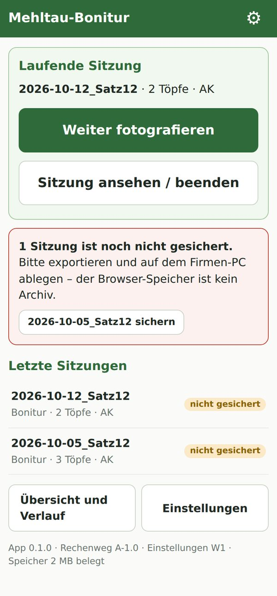
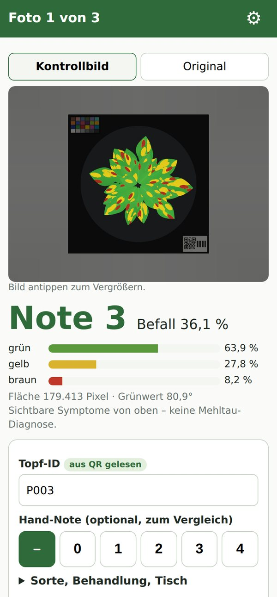
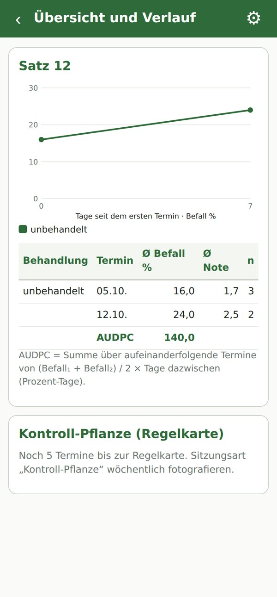
Abb. 2.1: Handy-App mit künstlichen Testfotos (Start, Ergebnis, Übersicht)
Das Kontrollbild zeigt, was gezählt wurde: grün = gesund, gelb = Aufhellung, rot = braun, hellblau = Glanzlicht; außerhalb des Topfkreises ist das Bild abgedunkelt. Die Topf-ID kommt aus dem QR-Code der Topf-Karte. Warnungen erscheinen rot; speichern geht dann nur mit Bestätigung.
Für den Firmen-PC. Mit dem Knopf „Demo-Daten erzeugen“ entsteht ein künstlicher Pilot mit 40 Töpfen und 71 Fotos, damit du alles ohne echte Fotos ausprobieren kannst.
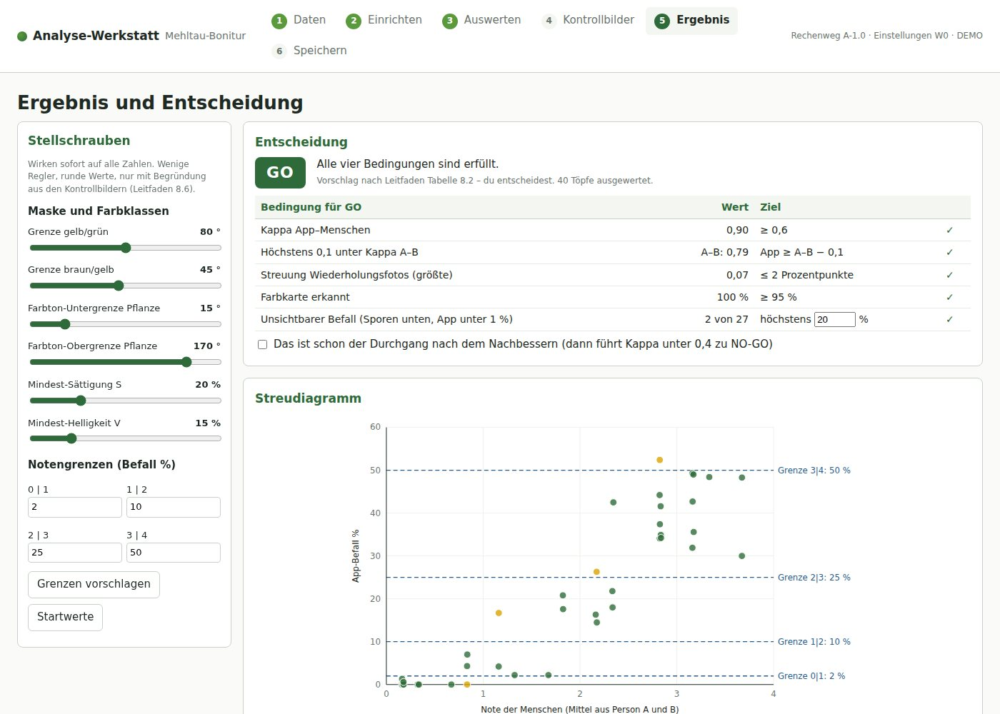
Abb. 2.2: Werkstatt mit dem künstlichen Demo-Pilot: Entscheidungstabelle nach Leitfaden Tabelle 8.2, Regler und Streudiagramm
Jede Topf-Karte hat eine große Nummer und einen QR-Code. Ich habe geprüft, dass der Code bei der Auflösung eines Box-Fotos (ca. 5 Bildpunkte je Millimeter) sicher gelesen wird. Oben auf jeder Seite steht ein Kontrollmaß von 50 mm: Stimmt es, ist richtig gedruckt.
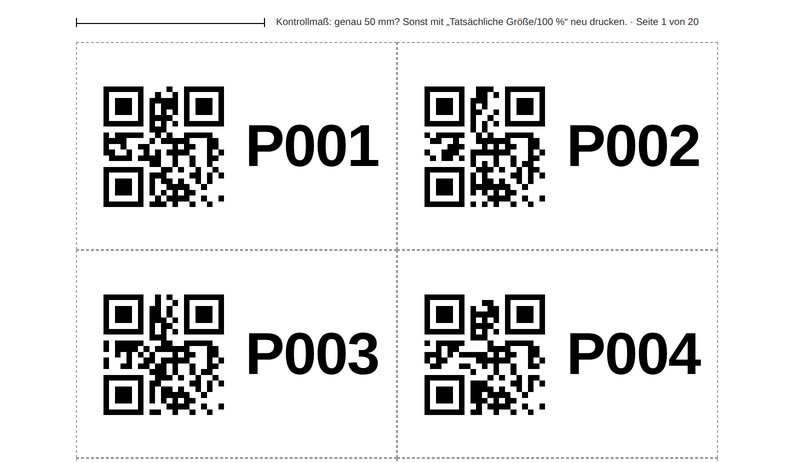
Abb. 2.3: Obere Hälfte einer Seite aus vorlagen/topfkarten_pilot.pdf
| Datei im Ordner vorlagen | Wofür |
|---|---|
topfkarten_pilot.pdf | P001–P200, 10 Karten je A4-Seite, 20 Seiten |
massstab_karte.pdf | Quadrat 10 × 10 cm für „ca. cm²“ (zwei je Seite, eine als Ersatz) |
pilot_bonitur_vorlage.xlsx | Blätter „Bonitur“ (P001–P200 vorbereitet), „Wiederholung“, „Lichttest“, „Anleitung“; Auswahllisten für Noten, ja/nein, Zeitpunkt, Hallenlicht |
bonitur_bogen_pilot.pdf | Kopiervorlage aus Leitfaden 6.8 für die Sicht-Bonitur auf Papier |
projekttagebuch.xlsx | Projekttagebuch (Leitfaden 1.6): Datum, Erledigtes, Entscheidungen, offene Fragen |
Alle 3D-Druckteile aus Kapitel 4 des Leitfadens stecken in einer einzigen OpenSCAD-Datei, fotobox/fotobox_teile.scad. Im „Customizer“ von OpenSCAD wählst du das Teil und trägst deine Maße ein. Fertige STL-Dateien mit Standardwerten liegen in fotobox/stl/. Druckeinstellungen, Zuschnittliste und Zusammenbau stehen in fotobox/README.md. Alle 8 Teile rendern ohne Fehler und lassen sich ohne Stützmaterial auf einem Druckbett von 220 × 220 mm drucken.
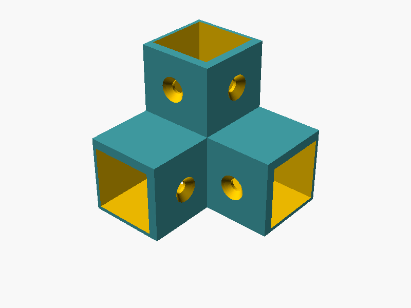
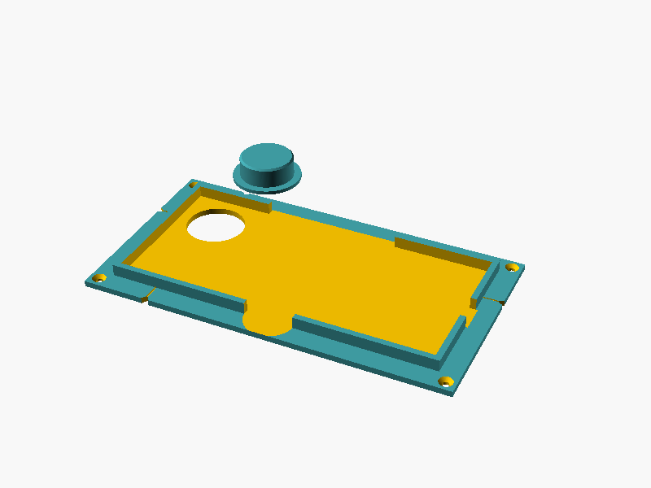
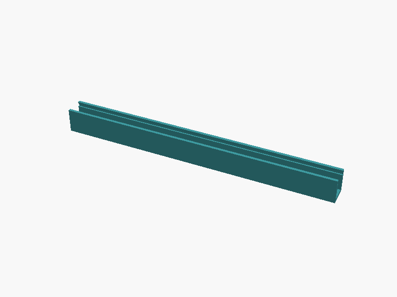
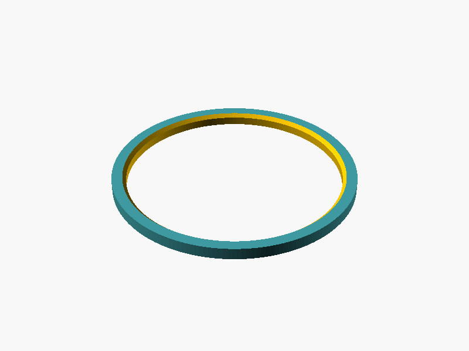
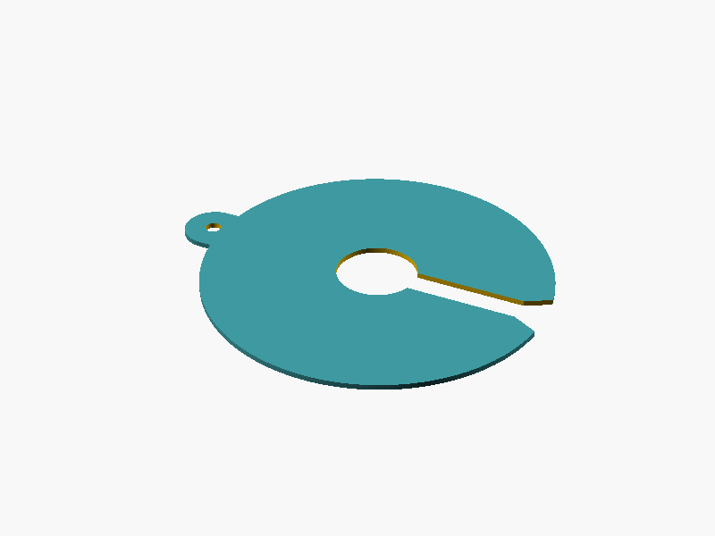
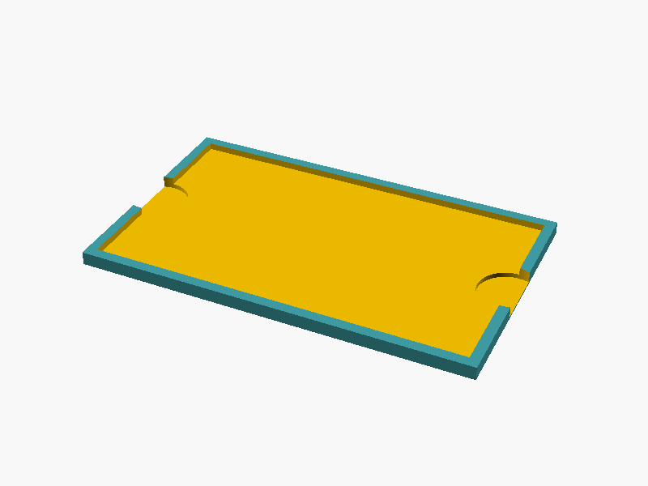
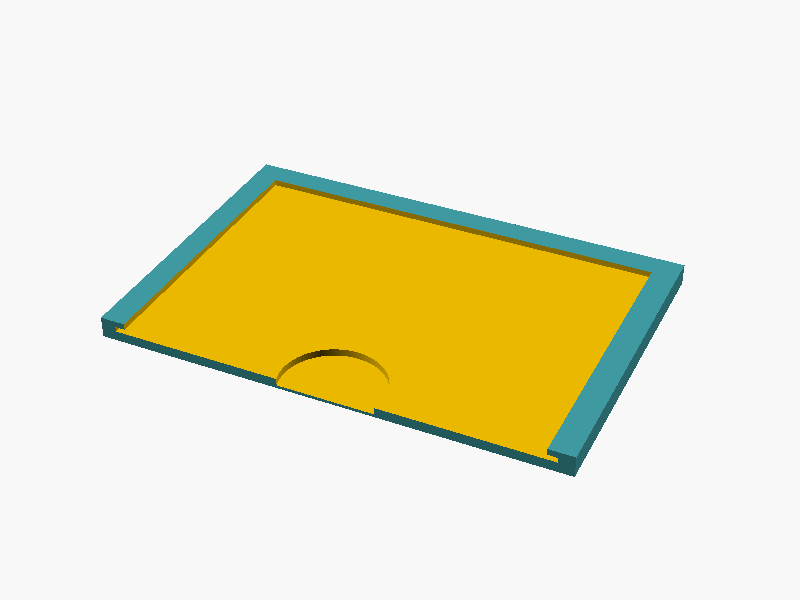
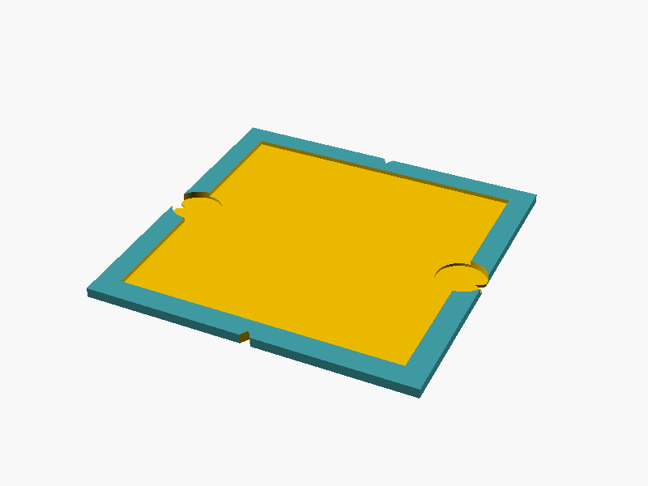
Abb. 2.4: Die acht Druckteile mit Standardwerten (Vorschau aus OpenSCAD)
| Teil | Stück | Wann drucken? |
|---|---|---|
| Eckverbinder | 8 | sofort, wenn deine Leiste genau 20 mm misst – zuerst einen als Passprobe |
| LED-Leiste | 8 (2 je Seite) | sofort, wenn der LED-Streifen 10 mm breit ist |
| Etikettenhalter | 1 | sofort (Topf-Karte 85 × 55 mm) |
| Maßstab-Halter | 1 | sofort |
| Farbkarten-Halter | 1 | nach dem Nachmessen der Farbkarte |
| Handyhalter mit Zentrierdorn | 1 | erst mit deinen Handymaßen (Kapitel 5.1) |
| Zentrierring | 1 je Topfgröße | erst mit Maß B |
| Abdeckscheibe | 2–3 je Topfgröße | erst mit den Maßen A und G |
Alles, was im Foto zu sehen ist, druckst du in mattem Schwarz. Zuschnitt bei 20-mm-Leisten und 500 × 500 × 700 mm innen: 4 senkrechte Leisten à 700 mm und 8 waagerechte à 457 mm, 4 Wände 500 × 700 mm (die Vorderwand ist die Klappe), Boden und Deckel 500 × 500 mm, im Deckel ein Loch von 30 mm genau in der Mitte. Für andere Maße rechnet OpenSCAD die Längen neu aus.
Zwei Abweichungen vom Leitfaden
Was die Tests nicht zeigen
Echte Basilikumpflanzen, echtes Licht in eurer Box und euer Handy kann ich nicht nachbauen. Die Schwellen und Notengrenzen sind die Startwerte aus dem Leitfaden. Ob sie passen, zeigt erst der Pilot (Etappe 3 und 4) – dafür ist die Werkstatt da.
Schritt für Schritt
Drei Dinge gehen ohne Box und ohne Box-Handy: die Werkstatt ausprobieren, die Seite bei GitHub einschalten und die Vorlagen drucken.
dist → analyse-werkstatt.html → oben rechts über dem Dateiinhalt das Symbol „Download raw file“ (Pfeil nach unten). Ist die Seite schon eingeschaltet (3.2), geht es einfacher über die Startseite und die Kachel „Werkstatt als Datei“.claude/nice-ritchie-a0d3bl auf „…“ → „Rename branch“ → main eintippen → „Rename branch“.main → grüner Knopf „Run workflow“. Nach 1–2 Minuten erscheint ein grüner Haken.https://konvalinaalexander-max.github.io/bonitieren_mehltau/ – mit Kacheln für App, Werkstatt und Druckseite.Tipp
Ab jetzt wird die Seite bei jeder Übernahme (Merge) in main automatisch neu veröffentlicht. Willst du eine Änderung vorher am Box-Handy testen, trägst du beim „Run workflow“ im Feld den Namen ihres Zweigs ein: Sie erscheint dann zusätzlich unter …/vorschau/app/, mit eigenen Testdaten – deine echten Daten bleiben unberührt.
Gut zu wissen
Veröffentlicht werden nur App, Werkstatt, Druckseite und Vorlagen – nie docs/, referenzbilder/ oder Tests. Die Messdaten bleiben ohnehin auf dem Handy und in deinen Exporten.
…/bonitieren_mehltau/app/ aufrufen.Den eigentlichen Kamera-Test (Einstellungen → „Kamera testen“) machst du später mit dem Box-Handy in der fertigen Box (Etappe 2): Er zeigt, ob die App Belichtung und Weißabgleich selbst festhalten kann oder ob du mit Open Camera fotografierst und importierst.
vorlagen/topfkarten_pilot.pdf – erst nach deiner Antwort auf F3 drucken. Im Druckdialog „Tatsächliche Größe“ bzw. „100 %“, dann Kontrollmaß (50 mm) und eine Karte (85 × 55 mm) nachmessen. Mattes Papier oder dünner Karton, nicht laminieren.vorlagen/massstab_karte.pdf drucken, nachmessen, auf festen Karton kleben.vorlagen/bonitur_bogen_pilot.pdf – je Person und Sitzung einer.vorlagen/pilot_bonitur_vorlage.xlsx als Bonitur/Pilot/pilot_bonitur.xlsx auf dem Firmen-PC speichern.vorlagen/projekttagebuch.xlsx; die erste Zeile ist schon eingetragen.Entscheidungen
Kreuze an oder schreib deine Antwort dazu. Wo ich einen Vorschlag habe, ist er markiert – sagst du nichts anderes, nehme ich ihn. F1, F6, F9, F12 und F14 sind die Entscheidungen aus Etappe 0 des Leitfadens.
F1Welche Boniturskala gilt? (Leitfaden 3.1)
F2Ab wie viel Befall gibt die App Note 1?
Note 0 heißt „keine sichtbaren Symptome“. Die App findet aber an fast jeder Pflanze ein wenig Gelb – junge Triebe, Blattränder, Lichtreflexe. Deshalb braucht Note 0 eine Grenze. Sie wird im Pilot noch geprüft.
F3Wie sollen die Topf-Karten im Pilot aussehen?
F4Welche Topf-Nummern nutzt ihr später im Betrieb?
Bleibt eine Karte mit QR-Code dauerhaft am Topf (z. B. Stecketikett), oder liegt die Karte nur beim Foto in der Box?
F5Welche Angaben braucht ihr je Topf in der App?
Passen die Wörter „Satz“, „Behandlung“, „Tisch“ und „Kürzel“ zu eurem Betrieb, oder sagt ihr anders dazu?
F6Repository und Hosting (Leitfaden 3.5)
Das Repository ist zurzeit öffentlich; die Veröffentlichung über GitHub Pages ist dafür eingerichtet.
F7Wie kommen Excel und Fotos vom Box-Handy auf den Firmen-PC?
Ablageort auf dem Firmen-PC, NAS oder in der Cloud (Leitfaden 3.7):
F8Gibt es an der Box WLAN?
Die App braucht Internet nur zum Installieren, für Updates und fürs Teilen. Fotografieren und Auswerten gehen offline.
F9Welches Box-Handy? (Leitfaden 3.2)
F10Wer druckt die 3D-Teile?
F11Rahmen und Platten der Box (Leitfaden Kapitel 4)
F12Wer bonitiert im Pilot? (Leitfaden 3.6 – nur Kürzel)
Person A: Person B: Zeitraum:
F13Sollen die Einstellungen der App geschützt sein?
F14Sorten im Pilot (nur grüne, Leitfaden 3.3) und Datenablage (3.7)
Sorten im Pilot: später dazu:
Ordner Bonitur/ liegt auf: Firmen-PC / NAS / Cloud-Ordner – Pfad:
F15Wie viel wird später fotografiert?
Ungefähr Töpfe je Woche, in Sitzungen. Gibt es eine Kunstpflanze als Kontroll-Pflanze (Leitfaden 10.7)? ja / noch nicht
Damit plane ich Speicher, Export und die Regelkarte der Kontroll-Pflanze.
Zum Ausfüllen
Die Druckteile werden genau für dein Handy, deine Töpfe und dein Material gemacht. Miss mit Messschieber auf 0,5 mm genau, Handy ohne Hülle.
Hersteller und Modell:
| Maß | Wert in mm |
|---|---|
| L Länge (lange Seite) | |
| B Breite (kurze Seite) | |
| D Dicke (ohne Kamerabuckel) | |
| a Mitte der Hauptkamera bis obere Kante (von hinten, Kamera oben) | |
| b Mitte der Hauptkamera bis linke Kante (von hinten gesehen) | |
| Kamerabuckel: obere linke Ecke ab oberer und linker Kante; Breite × Höhe; steht vor um h | |
| Seitentasten: von vorne (Display) gesehen links oder rechts; von … bis … ab oberer Kante | |
| Ladebuchse: Mitte der unteren Kante? Sonst Versatz zur Mitte |
Welche Linse ist die Hauptkamera? Kamera-App auf „1ד stellen und die Linsen nacheinander mit dem Finger abdecken – wird das Bild dunkel, ist es die Hauptkamera. Im Zweifel ein Foto der Rückseite mitschicken.
Wie Leitfaden Tabelle 3.2 und Abb. 3.1: A bis C am leeren Topf, D bis G an der größten Pflanze, die du fotografieren willst. Werte in cm, je Topfgröße eine Spalte. Für die Druckteile zusätzlich A, B und G mit dem Messschieber in mm.
| Maß | Wofür | Topf 1 | Topf 2 |
|---|---|---|---|
| A Topf oben (Außenkante Rand) | Abdeckscheibe | ||
| B Topf unten | Zentrierring | ||
| C Topfhöhe | Box-Höhe | ||
| D größter Pflanzendurchmesser | Bildausschnitt | ||
| E Pflanzenhöhe über dem Topfrand | Box-Höhe | ||
| F Tisch bis höchste Blattspitze | Abstand zur Kamera | ||
| G Stängel-Büschel über der Erde | Loch der Abdeckscheibe |
Topfform (rund/eckig), Material und Hersteller-Bezeichnung:
| Teil | Angabe |
|---|---|
| Leisten: Holz (genau nachmessen, oft nicht 20 mm) oder Alu-Profil 2020 – Querschnitt | |
| Platten: Material und Dicke | |
| Loch im Deckel: Durchmesser der Lochsäge (Vorschlag 30 mm) | |
| LED-Streifen: Breite, Kelvin, CRI/Ra, selbstklebend ja/nein | |
| Diffusor: Material und Dicke | |
| Farbkarte: außen Breite × Länge × Dicke | |
| Topf-Karte und Maßstab-Karte: Dicke (Papier bzw. Karton) | |
| 3D-Drucker: Modell, Druckbett X × Y × Z, Düse (meist 0,4) |
Die Farbkarte laut Hersteller: 63,5 × 109 mm – bitte trotzdem nachmessen, der Halter wird darauf zugeschnitten.
Abschluss
Wenn du die Fragen beantwortet und die Bögen ausgefüllt hast, startest du eine neue Sitzung in Claude Code und schickst diesen Text mit deinen Werten. Du kannst auch Fotos der ausgefüllten Seiten anhängen.
Prompt für Claude – Antworten aus „Stand und Fragen“
Lies CLAUDE.md, docs/SPEZIFIKATION.md, docs/FORTSCHRITT.md und fotobox/README.md. Hier sind meine Antworten aus dem PDF "Stand und Fragen" vom 05.10.2026: F1 Skala: [Vorschlag 0-4 / eigene: ...] F2 Grenze Note 0/1: [2 % / ... %] F3 Topf-Karten im Pilot: [mit QR / nur Nummer] F4 Topf-Nummern im Betrieb: [12-001 / ...]; Karte bleibt am Topf: [ja/nein] F5 Angaben je Topf: [...]; andere Begriffe: [...] F6 Repository/Hosting: [...] F7 Weg zum Firmen-PC: [...]; Ablageort: [...] F8 WLAN an der Box: [ja/nein] F9 Box-Handy: [Modell, Android-Version] F10 3D-Druck: [Drucker, Druckbett / Druckdienst / kein Druck] F11 Rahmen/Platten: [...] F12 Pilot: Person A [Kürzel], Person B [Kürzel], Zeitraum [...] F13 PIN: [ja/nein] F14 Sorten: [...]; Ordner Bonitur/ auf [...], Pfad [...] F15 Töpfe je Woche: [...]; Kontroll-Pflanze: [ja/noch nicht] Handy (mm): L [ ] B [ ] D [ ] a [ ] b [ ]; Buckel [Ecke, Größe, h]; Tasten [links/rechts, von-bis]; Ladebuchse [Mitte/Versatz] Töpfe (cm, A/B/G auch in mm): A [ ] B [ ] C [ ] D [ ] E [ ] F [ ] G [ ] Material: Leisten [ ] Platten [ ] Deckelloch [ ] LED [ ] Diffusor [ ] Farbkarte [ ] Kartendicke [ ] Drucker/Druckbett/Düse [ ] Bitte: 1. Trage die Entscheidungen mit Datum in docs/SPEZIFIKATION.md ein (Abschnitt "Entscheidungen Etappe 0"). Nur Kürzel, keine Namen. 2. Prüfe auf Widersprüche (z. B. Box-Höhe zu Pflanzenmaßen) und erkläre sie mir einfach, bevor du andere Werte änderst. 3. Übernimm meine Maße in fotobox/fotobox_teile.scad, exportiere alle STL-Dateien neu und prüfe die Vorschaubilder. 4. Passe App, Werkstatt und Vorlagen an meine Antworten an (Notenskala, Topf-Karten, Stammdaten), lass alle Tests laufen. 5. Erstelle einen Pull Request und sag mir, was ich darin prüfen soll.
| Wann | Du | Claude |
|---|---|---|
| nach deinen Antworten | Pull Request prüfen und übernehmen | Spezifikation, Druckteile, Vorlagen und App anpassen |
| Etappe 1 | Karton-Test, dann die feste Box bauen (Leitfaden Kapitel 4), Teile drucken | bei Fragen zu Maßen und Zusammenbau helfen |
| Etappe 2 | Box-Handy einrichten (Kapitel 5), App installieren, Kamera-Test in der Box | Ergebnis des Kamera-Tests auswerten, Aufnahmeweg festlegen |
| Etappe 3 | Pilot: 100–200 Töpfe fotografieren und zu zweit bonitieren, Referenzbilder auswählen | Referenzbilder prüfen, Sollwerte für die Tests erzeugen |
| Etappe 4 | Pilot in der Werkstatt auswerten, Go/No-Go entscheiden | Kontrollbilder mit dir durchgehen, Schwellen begründen |
| Etappe 5–6 | Einstellungsdatei in die App laden, kalibrieren, Kontroll-Pflanze wöchentlich | Feinschliff nach deinen Rückmeldungen |
Kapitel 9 des Leitfadens enthält Prompts, mit denen Claude die Bausteine B1 bis B9 baut. Das ist jetzt vorab erledigt. Kommst du im Leitfaden an einen solchen Prompt, schickst du stattdessen einen Prüf-Prompt – die „Fertig, wenn …“-Listen im Leitfaden gelten weiter:
Prompt für Claude – vorab gebauten Baustein prüfen
Lies CLAUDE.md, docs/SPEZIFIKATION.md und docs/FORTSCHRITT.md. Baustein [B1 … B9] ist vorab gebaut. Ich habe jetzt [echte Fotos / die fertige Box / das Box-Handy / die Pilot-Excel]. Prüfe den Baustein damit gegen die "Fertig, wenn"-Liste im Leitfaden, sag mir, was ich am Box-Handy bzw. Firmen-PC ausprobieren soll, und passe an, was nicht passt. Erst Plan, dann auf mein OK warten. Zum Schluss Pull Request.
Für B1 heißt das zum Beispiel: Referenzbilder hochladen, Claude erzeugt die Sollwerte und legt die vier Beispiel-Kontrollbilder echter Töpfe in docs/beispiele/ ab.
Dasselbe gilt für den Prompt „Druckdateien für die Fotobox“ in Leitfaden 4.5: Die Dateien liegen schon in fotobox/. Es genügen deine Maße – sie stehen im Antwort-Prompt oben.
Wenn etwas unklar ist
Frag einfach in einer neuen Sitzung: „Lies CLAUDE.md und docs/FORTSCHRITT.md und erklär mir …“. Die Projektregeln sorgen dafür, dass jede neue Sitzung weiß, wo wir stehen.
Anhang
Die wichtigsten Ordner und Dateien im Repository.
| Ordner/Datei | Inhalt |
|---|---|
app/ | Handy-App |
werkstatt/, dist/analyse-werkstatt.html | Analyse-Werkstatt; die Datei in dist/ läuft per Doppelklick |
kern/ | Analyse-Kern, den App und Werkstatt gemeinsam nutzen |
etiketten/ | Druckseite für Topf-Karten und Maßstab-Karte |
vorlagen/ | druckfertige PDFs und Pilot-Excel |
fotobox/ | OpenSCAD-Datei, STL-Dateien und Vorschaubilder der 3D-Druckteile |
docs/ | Leitfaden, Spezifikation, Fortschritt, dieses PDF |
CLAUDE.md | Projektregeln für die Arbeit mit Claude |
tests/, werkzeuge/ | automatische Tests, künstliche Testfotos, Bauen und Veröffentlichen |
.github/workflows/ | Tests bei jeder Änderung; Veröffentlichung auf GitHub Pages |
Den aktuellen Stand je Baustein findest du immer in docs/FORTSCHRITT.md.